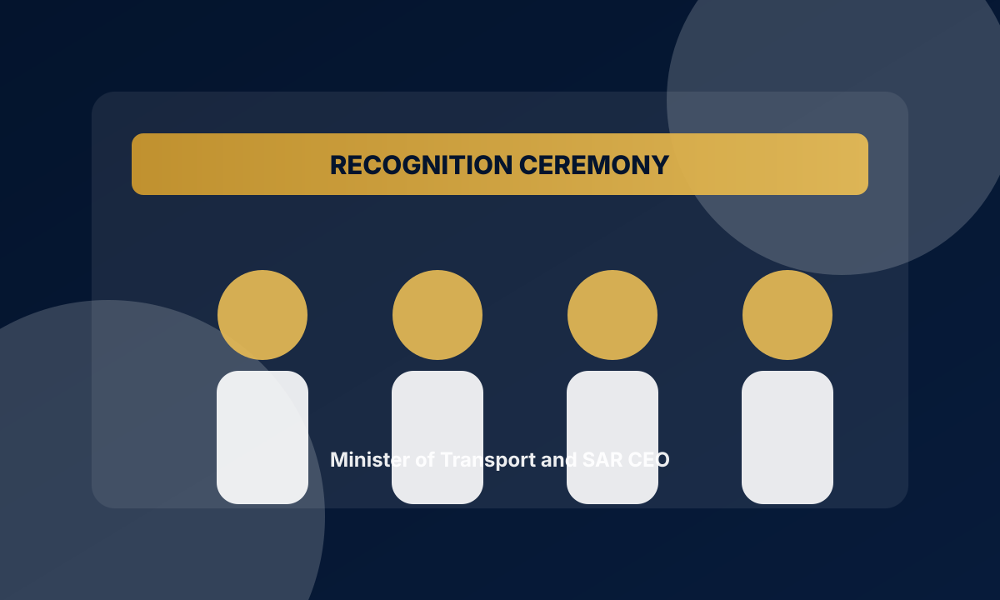

SENIOR PROJECT MANAGER
Yasir Aljuhani
PMP® | RMP® | Infrastructure Delivery | Operations Excellence
Riyadh, Saudi Arabia
Results-driven project professional leading complex infrastructure and operations initiatives with strong control over planning, risk, stakeholders, reporting, and delivery governance.
RECOGNITION
Recognition & Leadership Moment
Recognized during a ceremony with the Minister of Transport and Logistic Services and SAR CEO for outstanding performance and innovation in infrastructure delivery.
Ministerial Recognition 2025
SAR Leadership
Infrastructure Delivery
Operational Excellence

Experience
Senior Project Delivery Engineer
Saudi Arabia Railways (SAR)
Leading infrastructure delivery and operational readiness workstreams across live railway environments, with focus on governance, handover, stakeholder alignment, and controlled execution.
Planning Engineer
AlKhuraiji Factory
Improved planning workflows, production coordination, schedule control, reporting cycles, and constraint management across industrial operations.
Standards Engineer Intern
YASREF
Supported SAP inventory data integrity, procurement activities, and technical specification reviews against organizational standards.
Projects
SAR Smart Location Brain
Deterministic location intelligence linking OCC incidents to trusted railway coordinates, mapping logic, and analysis-ready outputs.
Infrastructure Delivery Governance
Structured delivery controls covering scope, interfaces, readiness gates, approvals, risk visibility, and executive reporting.
WON / OCC Automation
Automation for Weekly Operating Notice outputs and OCC data workflows to reduce manual handling and improve reliability.
Credentials
PM
PMP®
Project Management Institute
RM
RMP®
Risk Management Professional
KP
CKPI
Certified KPI Professional
SB
C-SBP
Strategy & Business Planning Professional
PROFESSIONAL DEVELOPMENT
Built for infrastructure, risk, reporting, and operational decision-making.
★
Skills
Project Delivery
Risk Management
Primavera
Power BI
Excel
Python
VBA
Stakeholder Management
Let’s Connect
I’m open to strategic opportunities, infrastructure delivery roles, operational excellence initiatives, and serious professional collaborations.